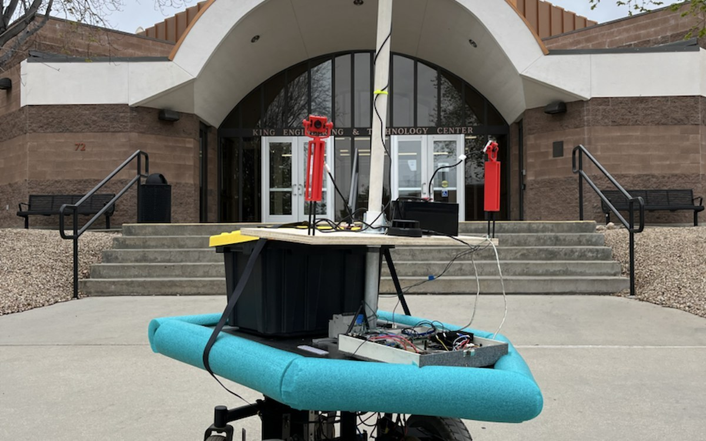
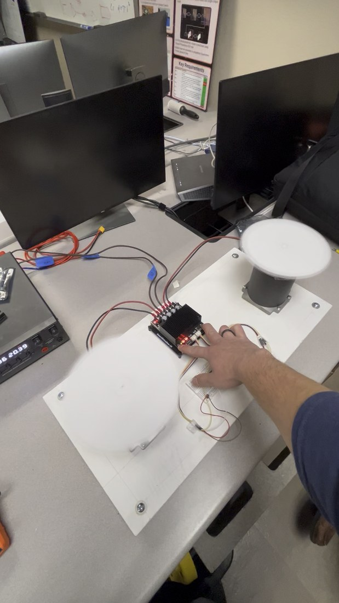
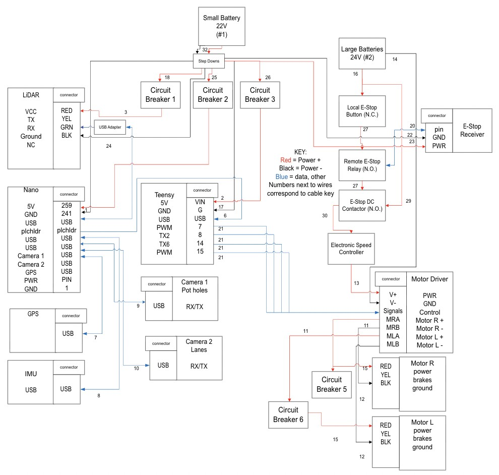
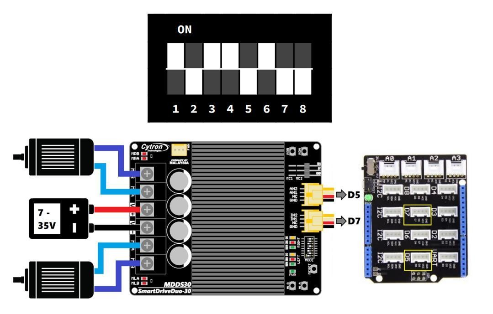

Senior Capstone
Pathfinding Autonomous Vehicle
PAVBOT was our autonomous vehicle capstone. My part was the electrical work: power distribution, motor-driver wiring, e-stop control, MATLAB analysis, and the bring-up work needed to make the robot move reliably without risking hardware.
My work
The electrical side of the robot.
I worked on the power path from the batteries to the motor drivers, the control wiring around the e-stop system, and the electrical interfaces between the compute stack, Teensy motor controller, and drive hardware.
I used MATLAB/Simulink to reason about motor-drive and power behavior, then tied that analysis back to the real vehicle: wire paths, relays, DC conversion, current draw, failure points, and startup checks.
I wanted the electrical side to be understandable during handoff: how to power it up, how to check the relays and drivers, how to stop it safely, and where to look first when something failed.
Photos
Build and electrical context.



Electrical details
The pieces I documented for handoff.


